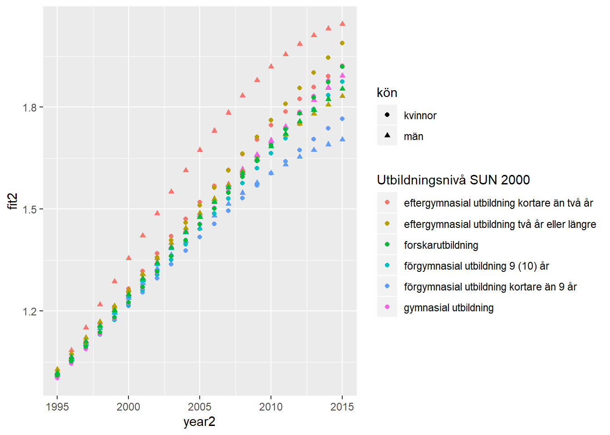

Chapter 11 Average monthly pay Year 1991 - 2015
Genomsnittlig månadslön, lön i fasta priser och lönespridning efter
utbildningsnivå SUN 2000 och kön. År 1991 - 2015
Genomsnittlig lön, kr
Only available at the Swedish SCB site
tb <- readfile("AM0112C1.csv") %>%
filter(year2 > 1994) %>%
group_by (`Utbildningsnivå SUN 2000`, kön) %>%
mutate (grouprelsal = relative_dev (salary))
tb %>%
ggplot () +
geom_point (mapping = aes(x = year2,y = grouprelsal, colour = `Utbildningsnivå SUN 2000`, shape=kön)) tb %>%
ggplot () +
geom_point (mapping = aes(x = year2,y = log(grouprelsal), colour = `Utbildningsnivå SUN 2000`, shape=kön))model <- lm (log(grouprelsal) ~ `Utbildningsnivå SUN 2000` + year2 + kön, data = tb)
tb <- bind_cols(tb, as_tibble(exp(predict(model, tb, interval = "confidence"))))
tb %>%
ggplot () +
geom_point (mapping = aes(x = year2,y = log(fit), colour = `Utbildningsnivå SUN 2000`, shape=kön))model1 <- lm (log(grouprelsal) ~ `Utbildningsnivå SUN 2000` * year2 * kön, data = tb)
tb <- bind_cols(tb, as_tibble(exp(predict(model1, tb, interval = "confidence"))))
tb %>%
ggplot () +
geom_point (mapping = aes(x = year2,y = log(fit1), colour = `Utbildningsnivå SUN 2000`, shape=kön))model2 <- lm (log(grouprelsal) ~ `Utbildningsnivå SUN 2000` * poly(year2, 2) * kön, data = tb)
tb <- bind_cols(tb, as_tibble(exp(predict(model2, tb, interval = "confidence"))))
tb %>%
ggplot () +
geom_point (mapping = aes(x = year2,y = log(fit2), colour = `Utbildningsnivå SUN 2000`, shape=kön))tb %>%
ggplot () +
geom_point (mapping = aes(x = year2,y = fit2, colour = `Utbildningsnivå SUN 2000`, shape=kön)) 
tb <- tb %>% mutate(diffpolylin = fit2 - fit1)
tb %>%
ggplot () +
geom_point (mapping = aes(x = year2,y = diffpolylin, colour = `Utbildningsnivå SUN 2000`, shape=kön))summary (model2) %>%
tidy() %>%
knitr::kable(
booktabs = TRUE,
caption = 'Summary from linear model fit')| term | estimate | std.error | statistic | p.value |
|---|---|---|---|---|
| (Intercept) | 0.3864880 | 0.0021769 | 177.5417591 | 0.0000000 |
Utbildningsnivå SUN 2000eftergymnasial utbildning två år eller längre |
0.0027597 | 0.0030786 | 0.8964176 | 0.3710277 |
Utbildningsnivå SUN 2000forskarutbildning |
-0.0279811 | 0.0030786 | -9.0889526 | 0.0000000 |
Utbildningsnivå SUN 2000förgymnasial utbildning 9 (10) år |
-0.0389480 | 0.0030786 | -12.6512928 | 0.0000000 |
Utbildningsnivå SUN 2000förgymnasial utbildning kortare än 9 år |
-0.0595645 | 0.0030786 | -19.3480356 | 0.0000000 |
Utbildningsnivå SUN 2000gymnasial utbildning |
-0.0284059 | 0.0030786 | -9.2269313 | 0.0000000 |
| poly(year2, 2)1 | 3.0942202 | 0.0345570 | 89.5396538 | 0.0000000 |
| poly(year2, 2)2 | -0.4570398 | 0.0345570 | -13.2256873 | 0.0000000 |
| könmän | 0.0738401 | 0.0030786 | 23.9850958 | 0.0000000 |
Utbildningsnivå SUN 2000eftergymnasial utbildning två år eller längre:poly(year2, 2)1 |
0.1618348 | 0.0488710 | 3.3114716 | 0.0010877 |
Utbildningsnivå SUN 2000forskarutbildning:poly(year2, 2)1 |
-0.0111561 | 0.0488710 | -0.2282771 | 0.8196468 |
Utbildningsnivå SUN 2000förgymnasial utbildning 9 (10) år:poly(year2, 2)1 |
-0.0911400 | 0.0488710 | -1.8649115 | 0.0635500 |
Utbildningsnivå SUN 2000förgymnasial utbildning kortare än 9 år:poly(year2, 2)1 |
-0.4096767 | 0.0488710 | -8.3828272 | 0.0000000 |
Utbildningsnivå SUN 2000gymnasial utbildning:poly(year2, 2)1 |
0.0348739 | 0.0488710 | 0.7135908 | 0.4762506 |
Utbildningsnivå SUN 2000eftergymnasial utbildning två år eller längre:poly(year2, 2)2 |
0.1216768 | 0.0488710 | 2.4897569 | 0.0135373 |
Utbildningsnivå SUN 2000forskarutbildning:poly(year2, 2)2 |
0.2314650 | 0.0488710 | 4.7362500 | 0.0000039 |
Utbildningsnivå SUN 2000förgymnasial utbildning 9 (10) år:poly(year2, 2)2 |
0.2023021 | 0.0488710 | 4.1395158 | 0.0000499 |
Utbildningsnivå SUN 2000förgymnasial utbildning kortare än 9 år:poly(year2, 2)2 |
0.1510235 | 0.0488710 | 3.0902501 | 0.0022629 |
Utbildningsnivå SUN 2000gymnasial utbildning:poly(year2, 2)2 |
0.2082843 | 0.0488710 | 4.2619236 | 0.0000303 |
Utbildningsnivå SUN 2000eftergymnasial utbildning två år eller längre:könmän |
-0.0954864 | 0.0043538 | -21.9318913 | 0.0000000 |
Utbildningsnivå SUN 2000forskarutbildning:könmän |
-0.0691193 | 0.0043538 | -15.8757443 | 0.0000000 |
Utbildningsnivå SUN 2000förgymnasial utbildning 9 (10) år:könmän |
-0.0552522 | 0.0043538 | -12.6906487 | 0.0000000 |
Utbildningsnivå SUN 2000förgymnasial utbildning kortare än 9 år:könmän |
-0.0682366 | 0.0043538 | -15.6729809 | 0.0000000 |
Utbildningsnivå SUN 2000gymnasial utbildning:könmän |
-0.0620116 | 0.0043538 | -14.2431954 | 0.0000000 |
| poly(year2, 2)1:könmän | 0.2579356 | 0.0488710 | 5.2778926 | 0.0000003 |
| poly(year2, 2)2:könmän | -0.3139512 | 0.0488710 | -6.4240870 | 0.0000000 |
Utbildningsnivå SUN 2000eftergymnasial utbildning två år eller längre:poly(year2, 2)1:könmän |
-0.7359942 | 0.0691140 | -10.6489946 | 0.0000000 |
Utbildningsnivå SUN 2000forskarutbildning:poly(year2, 2)1:könmän |
-0.4608026 | 0.0691140 | -6.6672865 | 0.0000000 |
Utbildningsnivå SUN 2000förgymnasial utbildning 9 (10) år:poly(year2, 2)1:könmän |
-0.2518514 | 0.0691140 | -3.6440017 | 0.0003362 |
Utbildningsnivå SUN 2000förgymnasial utbildning kortare än 9 år:poly(year2, 2)1:könmän |
-0.4422400 | 0.0691140 | -6.3987068 | 0.0000000 |
Utbildningsnivå SUN 2000gymnasial utbildning:poly(year2, 2)1:könmän |
-0.4178019 | 0.0691140 | -6.0451152 | 0.0000000 |
Utbildningsnivå SUN 2000eftergymnasial utbildning två år eller längre:poly(year2, 2)2:könmän |
0.2291573 | 0.0691140 | 3.3156444 | 0.0010724 |
Utbildningsnivå SUN 2000forskarutbildning:poly(year2, 2)2:könmän |
0.1633256 | 0.0691140 | 2.3631349 | 0.0190087 |
Utbildningsnivå SUN 2000förgymnasial utbildning 9 (10) år:poly(year2, 2)2:könmän |
0.2288881 | 0.0691140 | 3.3117484 | 0.0010867 |
Utbildningsnivå SUN 2000förgymnasial utbildning kortare än 9 år:poly(year2, 2)2:könmän |
0.1311388 | 0.0691140 | 1.8974279 | 0.0591053 |
Utbildningsnivå SUN 2000gymnasial utbildning:poly(year2, 2)2:könmän |
0.2271287 | 0.0691140 | 3.2862920 | 0.0011846 |
Anova(model2, type=2) %>%
tidy() %>%
knitr::kable(
booktabs = TRUE,
caption = 'Anova report from linear model fit') | term | sumsq | df | statistic | p.value |
|---|---|---|---|---|
Utbildningsnivå SUN 2000 |
0.2028877 | 5 | 407.75123 | 0 |
| poly(year2, 2) | 9.0143312 | 2 | 45291.12929 | 0 |
| kön | 0.0151143 | 1 | 151.87939 | 0 |
Utbildningsnivå SUN 2000:poly(year2, 2) |
0.0486819 | 10 | 48.91895 | 0 |
Utbildningsnivå SUN 2000:kön |
0.0527159 | 5 | 105.94522 | 0 |
| poly(year2, 2):kön | 0.0096985 | 2 | 48.72842 | 0 |
Utbildningsnivå SUN 2000:poly(year2, 2):kön |
0.0141526 | 10 | 14.22154 | 0 |
| Residuals | 0.0214953 | 216 | NA | NA |